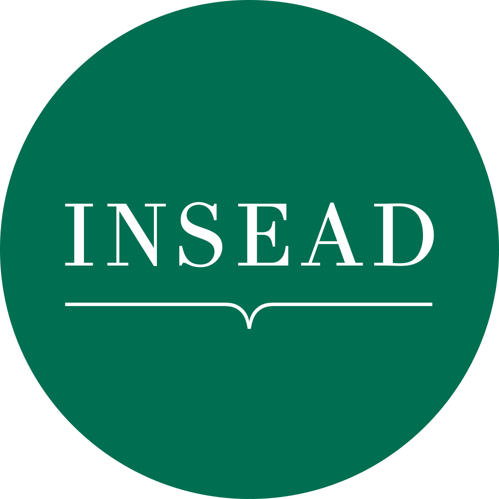

Antoine Désir

Associate Professor of Technology and Operations Management, INSEAD The INSEAD Alumni Professorship in AIAbout
I study how people choose, and how firms should design assortments, prices, and advertising systems around those choices. My work combines choice modeling, optimization, and machine learning, and is motivated by problems in retail, online platforms, and digital advertising.
I am an Associate Editor at Operations Research (Markets, Platforms and Revenue Management), Management Science (Operations Management), and Manufacturing & Service Operations Management, and I serve on the board of the INFORMS Revenue Management and Pricing Section.
Before joining INSEAD in 2018, I was a postdoctoral research scientist at Google in New York. I hold a PhD in Operations Research from Columbia University and a Diplôme d'ingénieur from École Polytechnique.
Choice modeling · Revenue management and pricing · Online advertising · Machine learning for operations · Approximation algorithms
Journal publications
-
Pay transparency in heterogeneous teams: Could some fairness concerns hurt productivity?
Lin Chen, Antoine Désir, Guillaume Roels
Production & Operations Management, accepted for publication
Finalist, DEI best student paper competition (student: Lin Chen), 2024 Selected for MSOM SIG TIE, 2023
-
Representing random utility choice models with neural networks
Ali Aouad, Antoine Désir
Management Science, 2026 72(8):6686–6701
Second place, INFORMS JFIG paper competition, 2022
- Choice-Learn: Large-scale choice modeling for operational contexts through the lens of machine learning Vincent Auriau, Ali Aouad, Antoine Désir, Emmanuel Malherbe Journal of Open Source Software, 2024 9(101):6899Code
- Fixed point label attribution for real-time bidding Martin Bompaire, Antoine Désir, Benjamin Heymann Manufacturing & Service Operations Management, 2024 26(3):1043–1061
- Price delegation with learning agents Atalay Atasu, Florin Ciocan, Antoine Désir Management Science, 2024 70(8):5540–5556
- Robust assortment optimization under the Markov chain choice model Antoine Désir, Vineet Goyal, Bo Jiang, Tian Xie, Jiawei Zhang Operations Research, 2024 72(4):1595–1614
- Incentive-compatible assortment optimization for sponsored products Santiago Balseiro, Antoine Désir Management Science, 2023 69(8):4668–4684
- Best of both worlds ad contracts: Guaranteed allocation and price with programmatic efficiency Maxime Cohen, Antoine Désir, Nitish Korula, Balasubramanian Sivan Management Science, 2023 69(7):4027–4050
-
Shapley meets uniform: An axiomatic framework for attribution in online advertising
Raghav Singal, Omar Besbes, Antoine Désir, Vineet Goyal, Garud Iyengar
Management Science, 2022 68(10):7457–7479
Second place, INFORMS Revenue Management and Pricing student paper competition (student: Raghav Singal), 2019
- Capacitated assortment optimization: Hardness and approximation Antoine Désir, Vineet Goyal, Jiawei Zhang Operations Research, 2022 70(2):893–904
-
Mallows-smoothed distribution over rankings approach for modeling choice
Antoine Désir, Vineet Goyal, Srikanth Jagabathula, Danny Segev
Operations Research, 2021 69(4):1206–1227
Finalist, MSOM student paper competition, 2017
-
Constrained assortment optimization under the Markov chain choice model
Antoine Désir, Vineet Goyal, Danny Segev, Chun Ye
Management Science, 2020 66(2):698–721
Finalist, George Nicholson student paper competition, 2015
-
Sparse process flexibility designs: Is the long chain really optimal?
Antoine Désir, Vineet Goyal, Yehua Wei, Jiawei Zhang
Operations Research, 2016 64(2):416–431
Finalist, George Nicholson student paper competition, 2014 Finalist, MSOM student paper competition, 2014
Working papers
- The impact of multi-selection in ride-hailing platforms Antoine Désir, Molin Liu Under review
- Direct versus delegated funding in humanitarian operations: A donor perspective Bengisu Urlu, Atalay Atasu, Antoine Désir, Luk Van Wassenhove In progress
- Efficient methods for assortment optimization using neural networks Antoine Désir, Axel Parmentier In progress
- Scalable dynamic pricing of substitutable products through structure-guided policy learning Y. Su, Antoine Désir, Axel Parmentier In progress
- Learning multi-choice models with combinatorial layers A. Amahihamedani, Vincent Auriau, Ali Aouad, Antoine Désir In progress
Refereed proceedings
- Shapley meets uniform: An axiomatic framework for attribution in online advertising Raghav Singal, Omar Besbes, Antoine Désir, Vineet Goyal, Garud Iyengar ACM World Wide Web Conference (WWW), 2019 1713–1723
- Assortment optimization under the Mallows model Antoine Désir, Vineet Goyal, Srikanth Jagabathula, Danny Segev Neural Information Processing Systems (NeurIPS), 2016
- Assortment optimization under a random swap based distribution over permutations model Antoine Désir, Vineet Goyal, Danny Segev ACM Conference on Economics and Computation (EC), 2016 341–342
- Games of network disruption and idempotent algorithms Antoine Désir, William McEneaney European Control Conference (ECC), 2013 702–709
Others
- Making sense of attribution in online advertising INSEAD Knowledge, July 2022
- Boosting vaccine production needs the right degree of flexibility with Prashant Yadav INSEAD Knowledge, November 2021